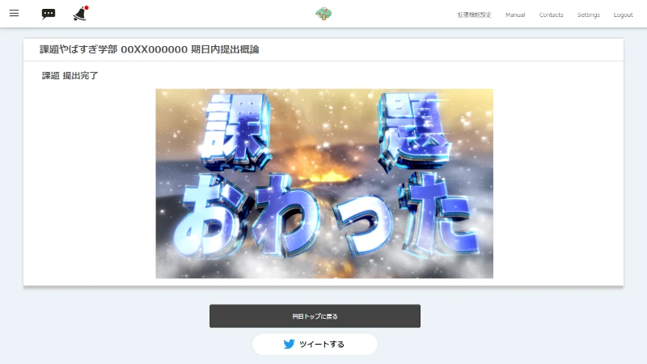

課題の提出に、遊び心を。
頑張って取り組んだ課題に、何かご褒美があったら。
課題を提出できた喜びを、誰かと分かち合えたら。
そんな願いを、kadaiowatterは叶えます。

いつもの画面にひと味プラス
課題を頑張って提出したのに、「登録が完了しました。」と表示されるだけ……そんな寂しいLMSとはおさらば。課題提出画面に「課題おわった」と大きな文字が書かれた画像を表示して、あなたの課題提出の瞬間を盛り上げます。
ご褒美はあなた好みに
課題を提出したときに表示される画像や、画像の大きさはオプションでカスタマイズ可能。背景いっぱいに「課題おわった」の画像を表示するもよし、ネコの写真で癒されるもよし。
※画像を変更する機能は今後実装される予定です。
ツイ廃のあなたにも
提出完了画面にシェアボタンを追加。ボタンをクリックするだけで、課題が終わったことを簡単にツイートできます。
生成されるツイートには、ハッシュタグと科目名に加え、「課題おわった」の画像を表示するURLが含まれます。
遊び心と利便性の両立
kadaiowatterはScombZ-Utilitiesと併用可能。Utilitiesによって使いやすくなったUIの邪魔はしません。